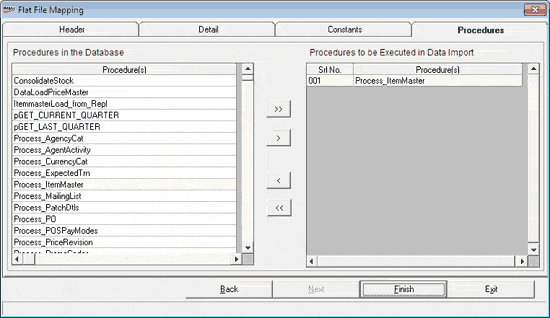

The Procedures tab is as shown.

Procedures in the Database: Displays a list of stored procedures defined, in the Shoper 9 HO database. Relevant procedures can be executed on the selected destination table to modify the data as per the business requirements. For example, the data from one flat file can be inserted into one temporary table, selected as the destination table, and using the selected procedures the data in the temporary table can be used to populate/ update data in multiple tables.
Procedures to be Executed in Data Import: Select the stored procedures to be executed as part of data import.